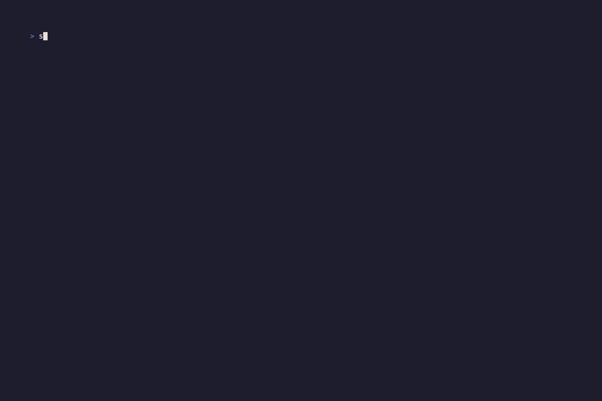

Real-time network diagnostics
Your network is talking. NetWatch lets you listen.
Like htop for your network — built in Rust for zero compromise.
// live_demo
Dashboard with live interface stats, bandwidth graphs, top connections, health probes, and latency heatmap.

// feature_set
From passive monitoring to deep packet inspection — all in a single lightweight binary.
RX/TX rates, totals, and 60-second sparkline history for every network interface. Aggregate bandwidth graphs across all active interfaces.
1s pollingEvery open socket with process name, PID, protocol, state, and addresses. Sortable columns with GeoIP location and WHOIS lookups.
PID attributionWireshark-style live capture with protocol decoding for DNS, TLS, HTTP, ICMP, ARP, DHCP, NTP, mDNS, and more. Hex/ASCII dump included.
10+ protocolsFollow TCP/UDP conversations with bidirectional text and hex views. Direction filtering, automatic SYN→SYN-ACK→ACK handshake timing.
stream trackingWireshark-style filter bar with protocol, IP, port, stream index, text search, and full AND/OR/NOT combinators. Applied live as you type.
live filteringAutomatic severity classification — Error, Warning, Note, Chat. Color-coded rows for RSTs, NXDOMAIN, FIN, zero window, ICMP unreachable.
auto-classifyASCII box diagram showing your machine, gateway, DNS servers, and top remote hosts with connection counts. Health indicators and traceroute built in.
visual mapGantt-style horizontal bar chart of connection lifetimes. Color-coded by state. Adjustable time windows from 30 seconds to 1 hour.
temporal viewReal-time AI analysis via local Ollama. Auto-analyzes every 15 seconds. Detects security concerns, performance issues, and anomalies.
ollama-poweredSave captured packets to standard .pcap files readable by Wireshark, tshark, and tcpdump. Export full capture or filtered subsets.
interoperableBackground IP geolocation with country, city, and org display. On-demand RDAP WHOIS for any IP. Private IPs automatically skipped.
network intelICMP ping probes to gateway and DNS with RTT and packet loss. Color-coded latency heatmap with 60-sample history on the Dashboard.
5s probing// tab_system
Press 1–8 to switch between diagnostic views. Everything keyboard-driven.
Everything at a glance. The default view combines all critical network telemetry into a single pane of glass.
Full scrollable table of every active network socket — with process attribution down to the PID.
Live packet capture with Wireshark-level protocol inspection. Deep decoding, stream reassembly, and expert classification.
ASCII network map showing your machine at the center, connected to infrastructure and remote hosts.
Gantt-style bar chart of connection lifetimes — see connection storms, long-lived sessions, and churn at a glance.
Real-time AI-powered analysis of your network traffic via a local Ollama instance. Your data never leaves your machine.
// protocol_decode
Layer-by-layer decoding from Ethernet frames to application payloads. Every field parsed and labeled.
// system_architecture
Three-layer architecture: collectors gather data, app state aggregates, and the TUI renders — all in Rust with zero garbage collection.
// install
One command. No config files. No daemons. Just run it.
Open source. MIT licensed. No telemetry. No cloud. Your data stays on your machine.